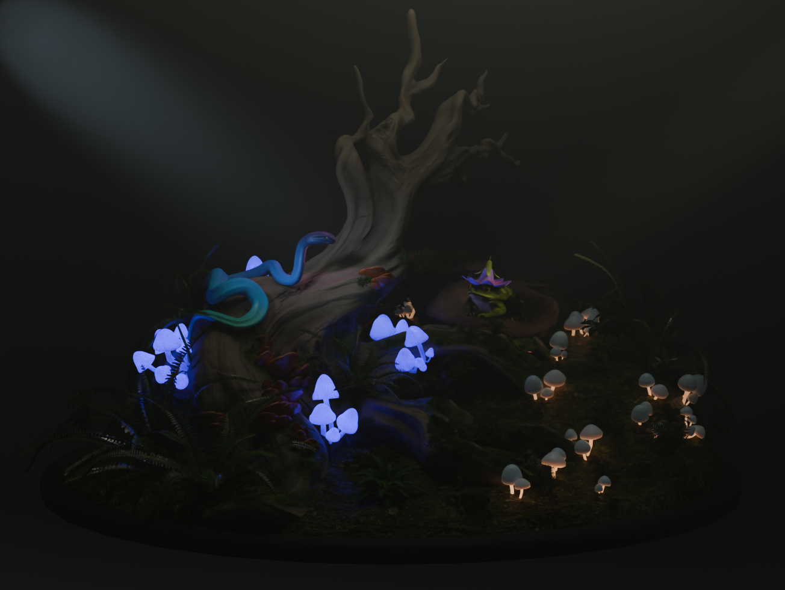
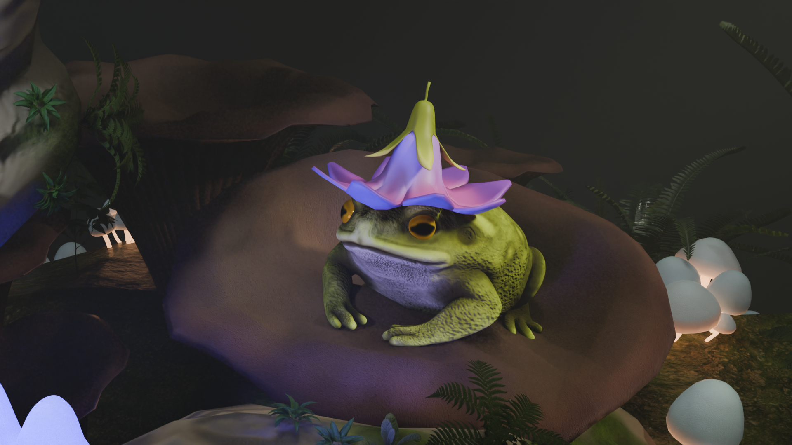
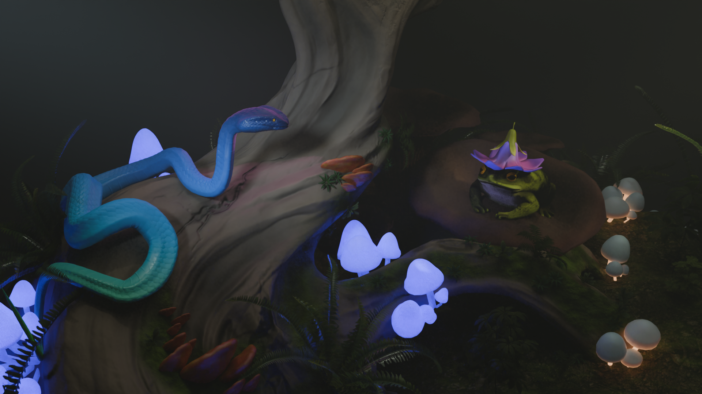
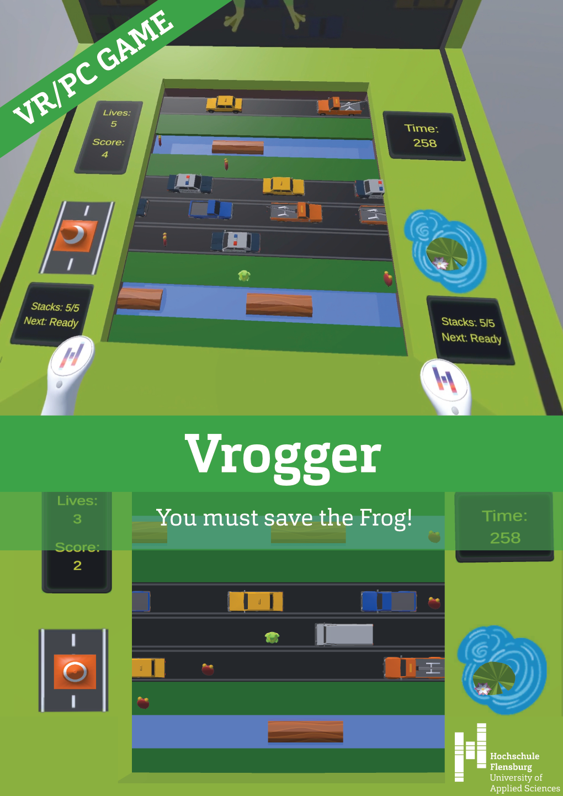
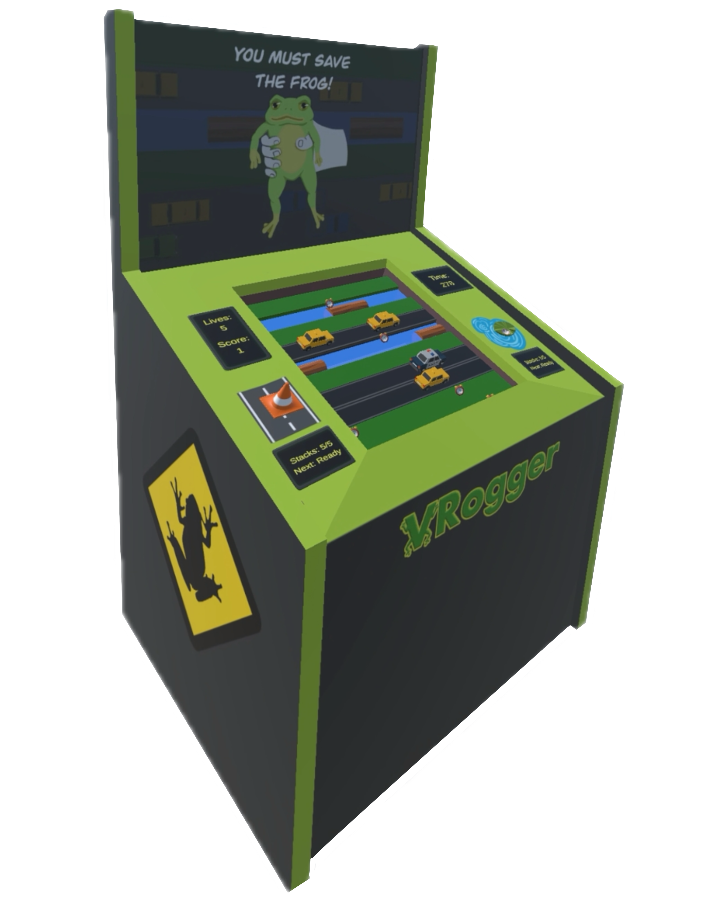
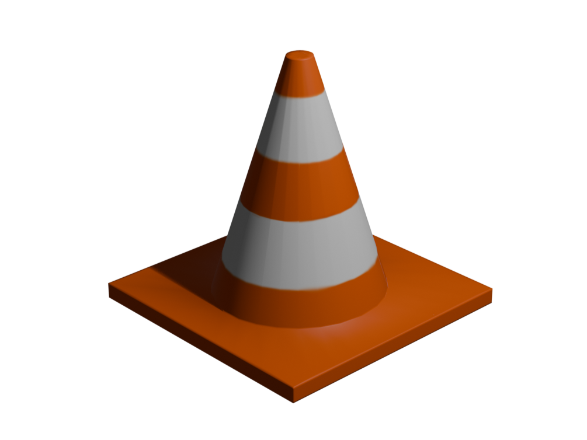
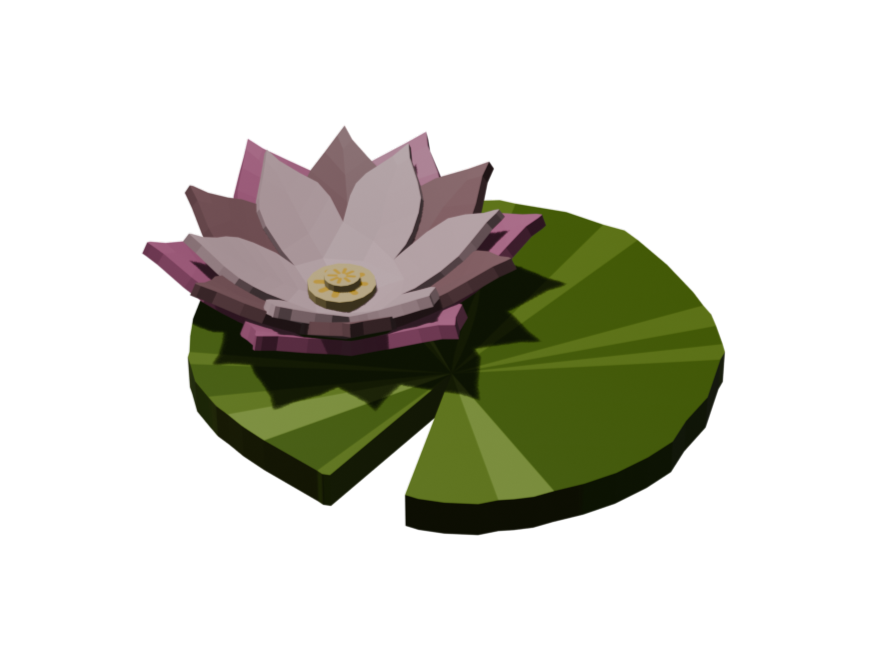
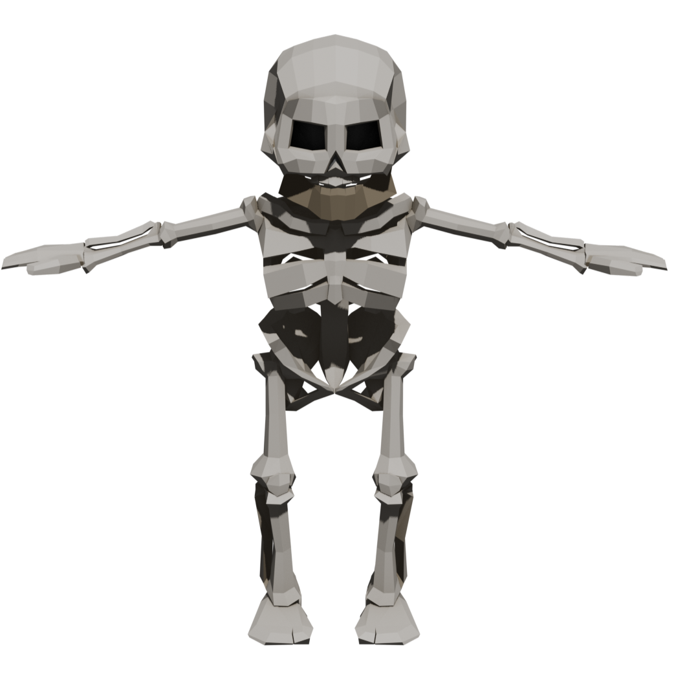
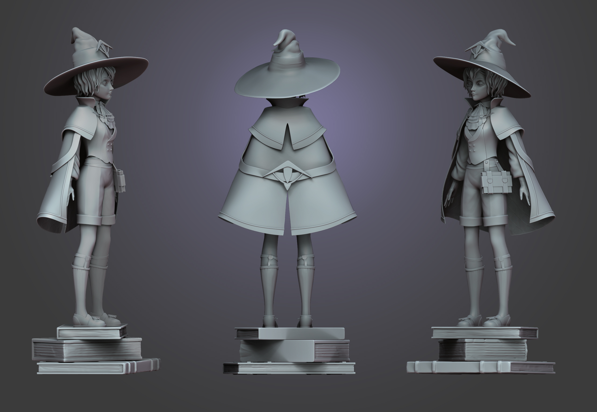
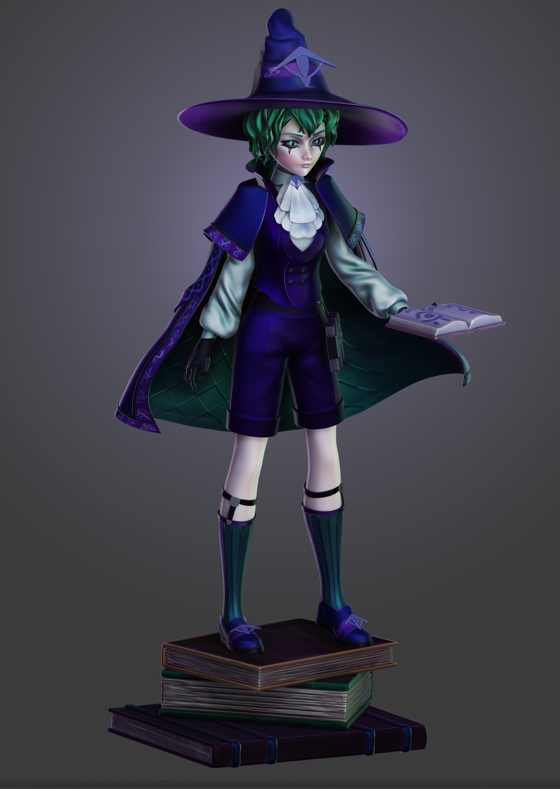

3D-MODELLIERUNG
Erstellung von 3D-Modellen in ZBrush und Blender: von der Modellierung und dem Sculpting über Retopologie und UV-Unwrapping bis hin zu Texturierung und Animation.

Tale of Venom and Virtue
Diese Diorama-Szene wurde im Rahmen einer Gruppenarbeit im Kurs „3D Look Development“ entwickelt und stellt den Konflikt zwischen dem Frosch als Protagonisten und der Schlange als Antagonistin dar. Ich war für die Erstellung und Texturierung eines Großteils der Umgebungsassets verantwortlich, darunter Pilze, ein Baum und Farne. Außerdem habe ich das Froschmodell vollständig modelliert und texturiert.



VRogger – Spiel Assets
VRogger ist ein VR-/PC-Spiel, das im Rahmen des Kurses „Virtuelle und Erweiterte Realität“ in Teamarbeit entwickelt wurde. Ich war für die Erstellung mehrerer 3D-Assets verantwortlich, darunter das Charaktermodell einer stilisierten Froschfigur mit Sprunganimation sowie zusätzliche Objekte wie ein Pylon und eine Seerose. Außerdem habe ich das Design eines Arcade-Automaten entwickelt. Alle Assets wurden in einem einfachen Low-Poly-Stil umgesetzt.




UnHero
UnHero ist ein Third-Person-Spiel, das im Rahmen des Kurses Spieleprogrammierung mit Unity entwickelt wurde. Der Spieler übernimmt die Rolle eines Skeletts - eines typischen Dungeon-NPCs, der die ständigen Angriffe von Abenteurern nicht länger erträgt, besonders nachdem sie ihm seinen Unterkiefer als Trophäe genommen haben. Er erwacht, verlässt seinen Dungeon und begibt sich auf die Suche nach den Abenteurern, um seine Würde - und seinen Kiefer - zurückzuerlangen
In diesem Projekt war ich für das Narrative Design verantwortlich sowie für die Erstellung des Hauptcharakters in Blender. Außerdem habe ich die Animationen mithilfe von Mixamo umgesetzt und die Bewegungslogik des Charakters in Unity entwickelt und mit den entsprechenden Animationen verknüpft.

Fran – 3D-Charaktermodell
Dies ist ein 3D-Charaktermodell einer jungen Zauberin namens Fran, das vollständig in ZBrush erstellt wurde. Das Modell entstand im Rahmen eines persönlichen Character-Design-Projekts für ein stilisiertes RPG-Spiel. Der Fokus liegt auf stilisierter Anatomie, detaillierter Kleidung und einer ausdrucksstarken Pose.


